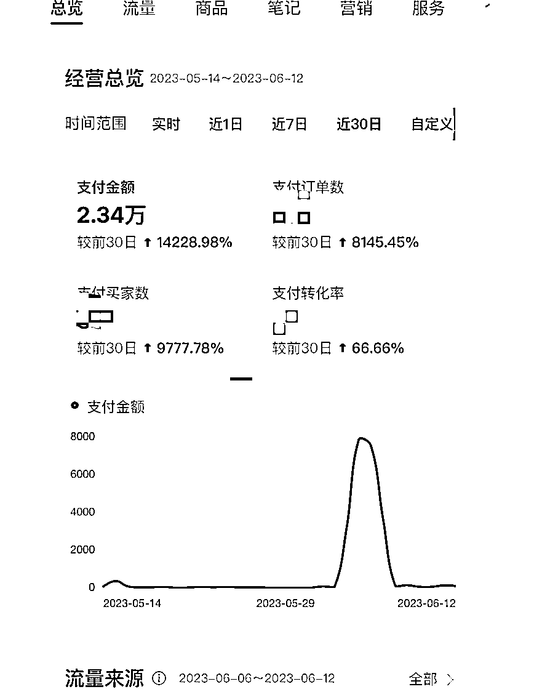
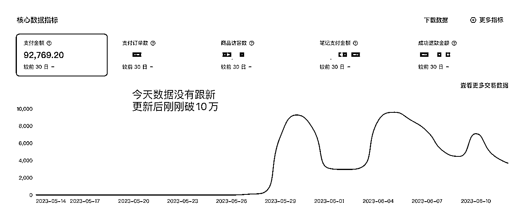
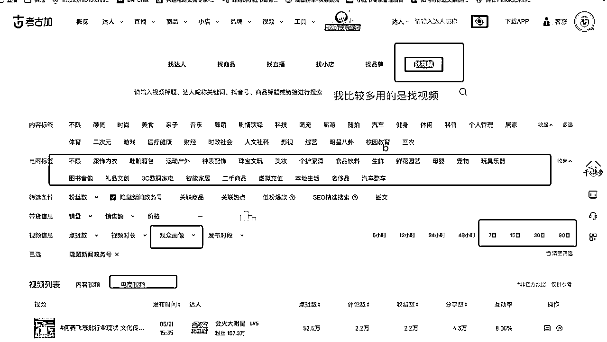

来源：https://hi428l7bh89.feishu.cn/docx/Rxr2dIdWBok4fexbSlIcwIG5n5d
先自我介绍一下～我是小刀
之前第一个副业项目是关于绿幕直播的，感兴趣的可以移步帖子【月入50万+，新手怎么快速入局抖音半无人？ https://t.zsxq.com/0fJ7oZpcl】
“自夸”一下，我是一个一旦开始做一件事情就有点“过于专注”的人，之前做绿幕的时候一心扑倒绿幕上，也没有注意外面项目的变化。
所以 大家说的视频号带货、小红书带货的红利期，我都没有赶上（🈚️奈ing），或者说我都不知道🤷♀️。
直到今年感觉到身体熬绿幕直播略微吃力，才想再看看其他项目，进入了小红书赛道。
跟月gmv破百万的大神们肯定没发比，但是也有一些小白从0开始的心得。
今天全文跟大家分析我半个月从0到3家店gmv破10万（利润里60%）的经验。
本文没有写大家在别的帖子里都能看到的内容，更多的是我个人的经验，相信航海期间，大家对于一些基础的操作和流程化的思路都已经有了认知。
从开始到现在我的帐号情况如下


拿做点更好一点的号示意～正式开始开店是5月27号晚上11点，开始出单上5月28号～爆单是5月31日
太多人强调赛道和选品的重要性，导致很多人（包括最开始的我）都掉进了一个小心翼翼的陷阱：
总是觉得一定要通过很多分析和调研才能选出一个更好的赛道才能一飞冲天瞬间爆单：饰品行不行？ 内裤行不行？水果行不行？百货行不行？
,,,,,,,,,,,,,,,,
当然，思考都过程是必然的，但是过度思考会导致执行滞后，从而形成负反馈循环♻️：
我选不出来，我是不是不合适做电商？
对于这个事情我的解决方案可能有点粗暴（后面会具体讲怎么更好的分配时间和精力，同时运营多个帐号）：
我的问题：我有3个想做的赛道，但是我真的定不下来哪个好。
我的方案：那我3个都做，据反馈看在哪个赛道上分配更多精力。
没有谁给你的答案，比你自己做出来的更能说服你自己。
对于非原创来说，选品不仅仅要考虑这个产品是否是爆品，也要看找素材的难度～售后问题等综合因素。
根据我的浅显经验来看，基本上每个赛道你选出10个品，测5个以上的品（每个品3个+不同的爆款视频模版），你就对于你具体要专攻哪个赛道更有想法了。
具体的选品方法很多前辈都分享了，很全面也很多，对于前期我采用的就一个方法：
通过最近的
爆款带货视频 ——查看对应产品——查看这个产品的关联视频销量情况

对于近期有爆款视频，且这个产品其他关联视频也能出单，那大概率这个品没问题、且素材可复制的比较多，考虑跟进。
通用的方法还是大家去看前辈们之前的帖子，都已经很全面了～
抖音的很多带货视频素材是【自带供应商】的且这个【供应商不做小红书】，即很多厂家会自己生产内容在抖音带货，且他们目前还没有开始做小红书。
所以如果你找他们谈一件代发，同时希望他们授权你可以使用素材，那你就是有【原创素材】了。
我其中有一个品，就是直接使用了供应商的素材，同时供应商需要配合我证明自己原创（提供底片截图即可）
虽然我有能更便宜的供应商渠道，但是考虑到投入产出选择了和这个供应商长期合作
于是 后面又在这个供应商的库里选品爆了2个品
算一下拿货贵了点，但实际上潜在收益很大～
当然这个也有弊端，就是供应商看你出单好，会亲自下场～（这个小伙伴们自行衡量怎么做）
具体的这种需要自己留意去寻找，路径如下：
爆款视频——查看关联店铺——查看店铺是否有关联抖音号——店铺关联抖音号是否有原创内容———原创内容是否有在小红书同步
按照目前我的号的情况来看，新号扶持是很大的～
具体体现在：新号一旦选对了品，很容易小爆，几十单是很好出的～，难的是一旦过了这几十单 新品接不上 这个号就有点凉凉了～
所以在新号起号阶段，建议大家
1、尽量尽量1:1复制爆款，最大化的在最开始能直接起来
2、多测品，目前我做的比较好的号就是品能跟上，1个爆的同时 就有第二个品有抬头的苗头
3、出单的品尽量找更多素材进行笔记更新，只要还能出单就不要停
同理，如果你有觉得特别好的品和素材，不妨直接怼新号试试～常备新号ing
我每天在小红书这件事情的时间分配如下：
晚上9:00—12:00，算是思考和决策时间
1、定时第二天的笔记更新（白天制作完成了）
2、看数据平台有没有新品/爆款视频，看是否要增加第二天的选品/更新视频剪辑模版
3、在看新品&爆款视频的过程中把产品搬运完成、素材下载完成（一边看一边下自己心里更有数怎么剪辑）
白天会集中拿出2个小时进行视频剪辑
确定好剪辑视频的模版，进行批量混剪
整体的逻辑是，思考时间和执行时间稍微分开，容易降低疲惫感～
思考时间的产出通过上新品来给自己正反馈；执行时间的产出通过视频成片给自己正反馈～
这样不会陷入很忙碌，一会焦虑数据 一会不知道发什么素材等虚假的迷茫中
具体怎么更快的搜集素材和进行视频剪辑，大家可以看前辈们的分享，已经很全了～
感觉这是我写的最短的一篇文章了
但是自觉真心写了自己颇为受益的几点，希望对你们有一丢丢🤏帮助。